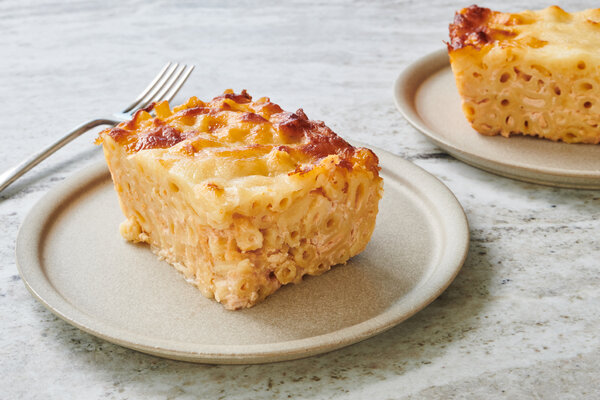

Macaroni Pie

Description
Macaroni pie is a staple food in Trinidad & Tobago.
It is similar to the food referred to as
Baked Macaroni and Cheese in the US, however the macaroni is more compact and can be
cut into chunks as opposed to scooped with a spoon.
Ingredients
- 1 tablespoon of butter
- 2 boxes of elbow macaroni
- 4 bags of shredded sharp cheddar cheese
- 1 cup heavy cream
- 4 eggs
- 1 teaspoon of salt
- 1 teaspoon of paprika
Steps
- Bring 24 ounces of water in 2 large saucepans to boil.
- Once boiling, carefully pour the macaroni in the water,
and cook until al dente.
- Once the macaroni is cooked, strain all the water from
the pots.
- Preheat the oven to 375 degrees Fahrenheit.
- Thinly spread the butter on the bottom and sides of the
metal pan that will cook
the maraconi. Make sure that the
edges of the pan are at least 2 inches high.
- Sprinkle a thin layer of cheese over the bottom of the
pan.
- Pour half the macaroni in the pan. Add a bag of cheese,
and mix.
- Pour the other half of the macaroni in the pan, add another
bad of cheese, and mix.
- Add the third bad of cheese, the eggs, the heavy cream,
and the salt to the macaroni
and mix.
- Use a pot spoon to flatten and smooth the macaroni until
it's flat. Then use the last
bag of cheese to create a top
layer of cheese over the macaroni.
- Sprinkle the paprika across the top of the cheese.
- Put the macaroni pan in the oven, and cooked uncovered for
about 30 minutes, or
until the cheese crust is a golden
brown.
- Take the pie out of the oven, turn the oven off, plate,
and enjoy! :)